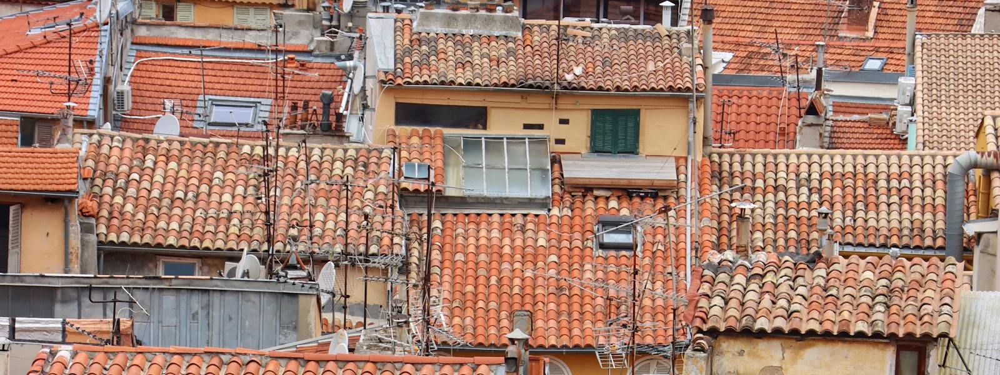

Dépannage informatique dans l'arrière-pays niçois
Levens, Contes, Carros, Tourrette-Levens, L'Escarène… À une demi-heure de Nice, nous venons chez vous pour régler vos soucis d'ordinateur, améliorer une connexion internet capricieuse ou installer un vrai poste de télétravail.
Nos services informatiques dans l'arrière-pays niçois
Particuliers, télétravailleurs, artisans et commerces de village : voici les interventions que l'on nous demande le plus souvent autour de Nice.
Pour les particuliers
Internet lent ? On s'en occupe
Dans les villages et hameaux, la connexion est souvent le premier problème : ligne cuivre fatiguée, box mal placée, maison sur plusieurs niveaux. Avant de changer d'abonnement, nous mesurons et cherchons la vraie cause.
- Test de la ligne et de la couverture Wi-Fi pièce par pièce
- Wi-Fi maillé pour les maisons en restanques ou sur plusieurs niveaux
- Conseil sur la fibre, la box 4G/5G ou une connexion de secours
- Poste de télétravail complet, VPN et visio
Communes desservies dans l'arrière-pays niçois
Les vallées du Paillon, de la Vésubie basse et du Var, ainsi que les collines au nord de Nice.
- Levens
- Tourrette-Levens
- Aspremont
- Falicon
- Saint-André-de-la-Roche
- La Trinité
- Drap
- Cantaron
- Contes
- Châteauneuf-Villevieille
- Bendejun
- Berre-les-Alpes
- L'Escarène
- Touët-de-l'Escarène
- Blausasc
- Peille
- Peillon
- Carros
- Le Broc
- Gattières
- Saint-Jeannet
- Saint-Martin-du-Var
- La Roquette-sur-Var
- Colomars
- Castagniers
- Saint-Blaise
Artisans, commerces et habitants des villages
Dans l'arrière-pays, on ne trouve pas toujours un informaticien à côté de chez soi. Pourtant, l'artisan qui fait ses devis sur ordinateur, la boulangerie qui encaisse par carte ou le retraité qui échange avec ses petits-enfants en visio ont tous besoin d'un matériel qui fonctionne.
Nous nous déplaçons dans les villages autour de Nice pour dépanner, installer et conseiller, et nous prenons le temps d'expliquer. Pour les petites entreprises, un suivi à distance évite la plupart des pannes, sans avoir à descendre en ville.
- Ordinateur lent ou en panne
- Connexion internet et Wi-Fi
- Imprimante, scanner, nouveau matériel
- Accompagnement des seniors à domicile
Arrière-pays niçois : vos questions
Vous déplacez-vous vraiment jusqu'à Levens ou L'Escarène ?
Oui. Ces communes font partie de notre zone d'intervention principale, à une trentaine de minutes de Nice. Nous regroupons souvent les rendez-vous d'un même secteur pour venir rapidement.
Ma connexion internet est très lente, que pouvez-vous faire ?
Nous testons votre ligne et votre Wi-Fi, puis cherchons la meilleure solution : réglages de la box, emplacement, Wi-Fi maillé, ou passage à une box 4G/5G ou à la fibre quand elle est disponible chez vous. Nous vous aidons aussi à constituer un dossier pour votre opérateur.
Je télétravaille, pouvez-vous m'aider à m'équiper ?
Oui : poste de travail, écran, imprimante, VPN de l'entreprise, visioconférence, et une connexion de secours si votre activité l'exige.
Et pour les villages plus haut dans les vallées ?
Au-delà de notre zone principale, nous intervenons sur rendez-vous. La télé-assistance permet, elle, de régler la plupart des problèmes logiciels sans déplacement.
Proposez-vous des cours d'informatique à domicile dans les villages ?
Oui. Nous proposons des séances personnalisées à domicile pour apprendre à utiliser son ordinateur, sa tablette ou son smartphone, à son rythme.
Nous intervenons aussi près de chez vous

Un souci informatique dans l'arrière-pays ?
Appelez-nous : nous venons chez vous, de Levens à L'Escarène.